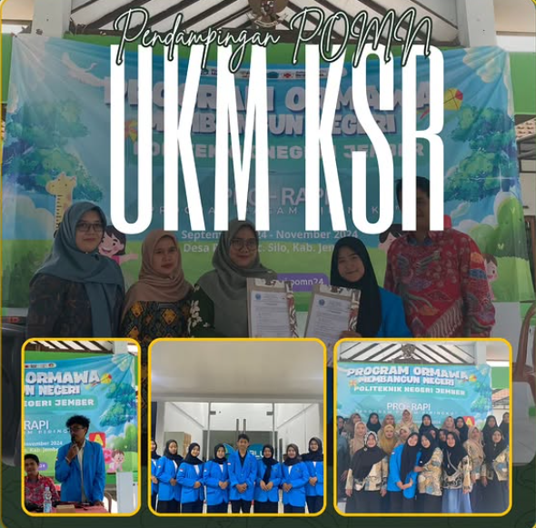

PENGAWALAN PROGRAM ORMAWA
MEMBANGUN NEGERI UKM KSR
Telah dilaksanakan kegiatan Pengawalan POMN UKM KSR oleh Kementerian Sosial Masyarakat pada Juli - November 2024 berlokasi di Desa Pace, Kecamatan Silo, Kabupaten Jember.
Program Ormawa Membangun Negeri (POMN) UKM KSR yang bertemakan "Optimalisasi Peran Kader Kesehatan Melalui Pro-Rapi (Program Ragam Piringku) Sebagai Upaya Peningkatan Gizi di Desa Pace" merupakan kegiatan yang dilakukan untuk menyosialisasikan upaya peningkatan gizi serta mengurangi jumlah stunting di Desa Pace.